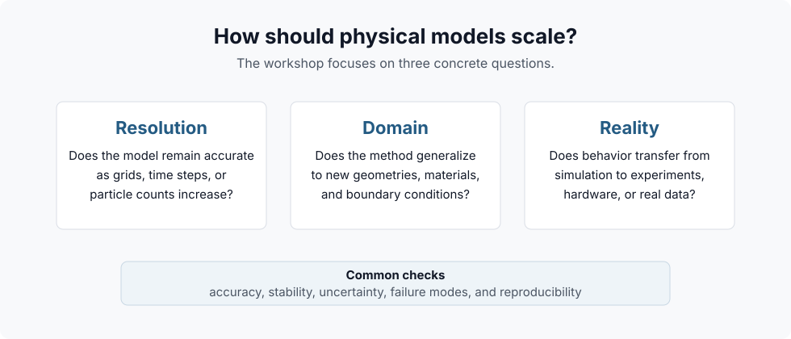

ICLR 2027 Workshop
Principles and Methods for Scaling
Physical simulation underpins work from protein dynamics and climate modeling to robotic control and metamaterial optimization. However, high-fidelity physical methods still struggle to scale: across spatial and temporal resolutions, across the sim-to-real divide, and across the diversity of real-world physical regimes. Machine learning provides expressive surrogates and neural operators, but often at the cost of physical consistency, numerical stability, and generalizability.
This workshop brings together researchers from machine learning, physics-based simulation, computer graphics, and computational design to examine the principles and methods that enable physical modeling to scale reliably.

The program features invited talks from leading researchers across machine learning, scientific computing, graphics, and design. Confirmed and prospective speakers are listed below.
Full-day in-person workshop (~8.5 hours). Over 50% of the program is dedicated to interactive exchange, posters, open debates, and audience Q&A.
We invite submissions across two non-archival tracks managed through OpenReview:
Accepted contributions will be presented as spotlights or posters. Submissions are non-archival and will not preclude publication elsewhere.
MIT CSAIL
University of British Columbia
UMass Amherst / MIT-IBM
Simon Fraser University